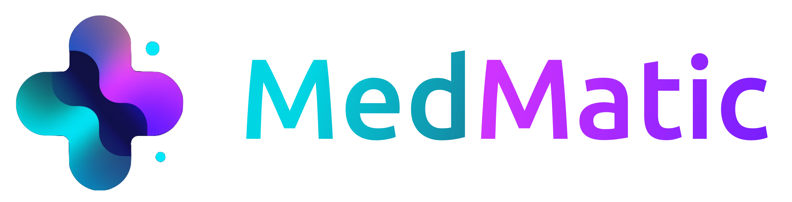

Karriere bei Medmatic
Offene Stellen
Über MedMatic: Wir sind ein junges High-Tech-Startup aus München und entwickeln KI-Lösungen, die Krankenhäuser dabei unterstützen, Erlöse zu sichern und administrative Prozesse zu optimieren. Bereits heute verarbeiten wir tausende Fälle pro Monat für öffentliche, private und kirchliche Krankenhäuser.
1 Rolle · München · Vor Ort